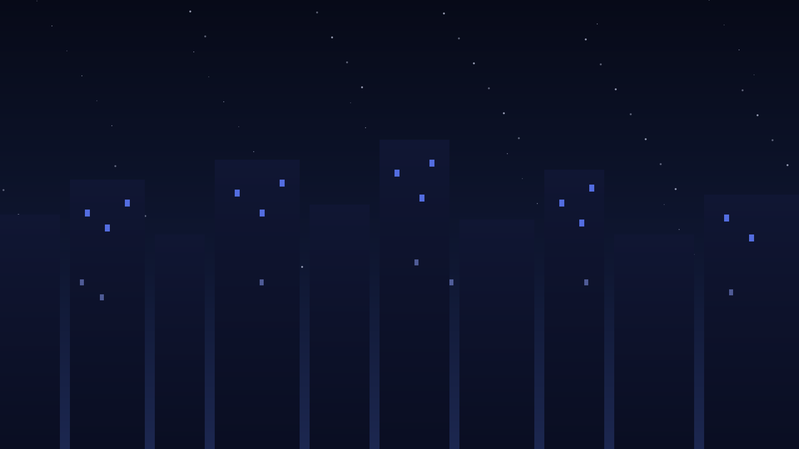

清晨四点的盘山公路与云海之上的一束光

一部关于孤独与相遇的都市影像手记
海拔四千米的一夜星空与清晨的第一缕阳光
Hongchi Chen
通信工程研究生 · 用博客记录生活、代码与思考，研究方向为时间序列。
清晨四点的盘山公路，云海之上的一束光，记录一次凌晨出发的短途徒步。
一部关于孤独与相遇的都市影像手记，写给深夜还醒着的城市漫游者。
海拔四千米的一夜星空与清晨的第一缕阳光，一次关于耐心的自我对话。
一碗热汤面，一盏暖黄的灯，记录那些被食物治愈的夜晚。
从深夜实验电子到清晨民谣，十首歌陪我走过一整年。
散场后空荡的街道，和眼眶里还没干的水光。